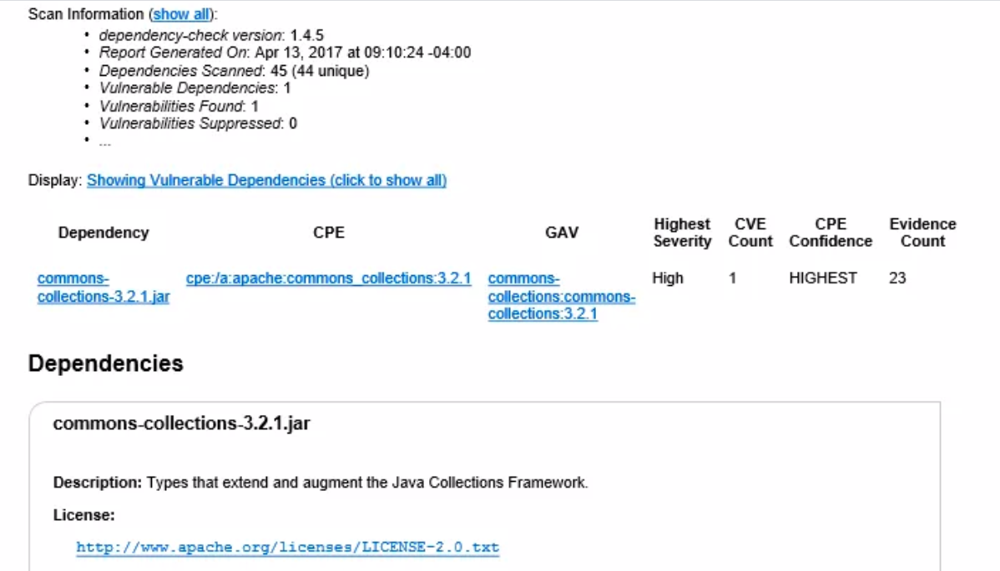
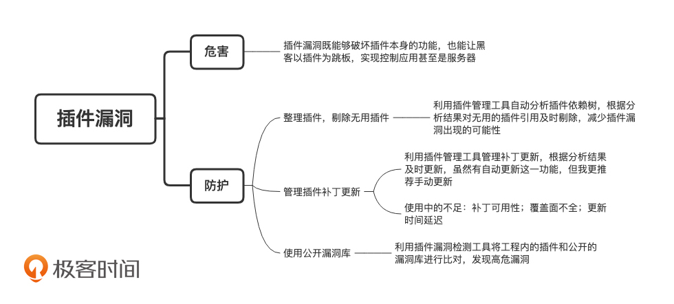

- 00 开篇词 别说你没被安全困扰过.md.html
- 01 安全的本质：数据被窃取后，你能意识到问题来源吗？.md.html
- 02 安全原则：我们应该如何上手解决安全问题？.md.html
- 03 密码学基础：如何让你的密码变得“不可见”？.md.html
- 04 身份认证：除了账号密码，我们还能怎么做身份认证？.md.html
- 05 访问控制：如何选取一个合适的数据保护方案？.md.html
- 06 XSS：当你“被发送”了一条微博时，到底发生了什么？.md.html
- 07 SQL注入：明明设置了强密码，为什么还会被别人登录？.md.html
- 08 CSRF_SSRF：为什么避免了XSS，还是“被发送”了一条微博？.md.html
- 09 反序列化漏洞：使用了编译型语言，为什么还是会被注入？.md.html
- 10 信息泄露：为什么黑客会知道你的代码逻辑？.md.html
- 11 插件漏洞：我的代码看起来很安全，为什么还会出现漏洞？.md.html
- 13 Linux系统安全：多人共用服务器，如何防止别人干“坏事”？.md.html
- 14 网络安全：和别人共用Wi-Fi时，你的信息会被窃取吗？.md.html
- 15 Docker安全：在虚拟的环境中，就不用考虑安全了吗？.md.html
- 16 数据库安全：数据库中的数据是如何被黑客拖取的？.md.html
- 17 分布式安全：上百个分布式节点，不会出现“内奸”吗？.md.html
- 18 安全标准和框架：怎样依“葫芦”画出好“瓢”？.md.html
- 19 防火墙：如何和黑客“划清界限”？.md.html
- 20 WAF：如何为漏洞百出的Web应用保驾护航？.md.html
- 21 IDS：当黑客绕过了防火墙，你该如何发现？.md.html
- 22 RASP：写规则写得烦了？尝试一下更底层的IDS.md.html
- 23 SIEM：一个人管理好几个安全工具，如何高效运营？.md.html
- 24 SDL：怎样才能写出更“安全”的代码？.md.html
- 25 业务安全体系：对比基础安全，业务安全有哪些不同？.md.html
- 26 产品安全方案：如何降低业务对黑灰产的诱惑？.md.html
- 27 风控系统：如何从海量业务数据中，挖掘黑灰产？.md.html
- 28 机器学习：如何教会机器识别黑灰产？.md.html
- 29 设备指纹：面对各种虚拟设备，如何进行对抗？.md.html
- 30 安全运营：“黑灰产”打了又来，如何正确处置？.md.html
- 加餐1 数据安全：如何防止内部员工泄露商业机密？.md.html
- 加餐2 前端安全：如何打造一个可信的前端环境？.md.html
- 加餐3 职业发展：应聘安全工程师，我需要注意什么？.md.html
- 加餐4 个人成长：学习安全，哪些资源我必须要知道？.md.html
- 加餐5 安全新技术：IoT、IPv6、区块链中的安全新问题.md.html
- 模块串讲（一）Web安全：如何评估用户数据和资产数据面临的威胁？.md.html
- 模块串讲（三）安全防御工具：如何选择和规划公司的安全防御体系？.md.html
- 模块串讲（二）Linux系统和应用安全：如何大范围提高平台安全性？.md.html
- 结束语 在与黑客的战役中，我们都是盟友！.md.html
- 捐赠
11 插件漏洞：我的代码看起来很安全，为什么还会出现漏洞？
你好，我是何为舟。
在讲反序列化漏洞的时候，我们说过，这个漏洞其实就存在于Fastjson、Jackson等知名的JSON解析库中，跟你自己写的代码没有太多关系，所以极难掌控。也就是说，在开发应用的过程中，尽管你的代码很安全了，黑客还是能够通过插件漏洞对应用发起攻击（我文中提到的插件，是第三方的插件、依赖库、工具和框架等的统称）。
说到这儿，想不想测试一下你的插件是否安全？在这里，我准备了几个问题，你可以看看自己是否对所用的插件了如指掌。
- 你所使用的所有插件的版本是什么？（包括前端和后端，直接引用和间接引用）
- 你所使用的这些插件，是否存在漏洞，是否不被维护了，是否被废弃了？
- 你所使用的这些插件，会在哪些地方发布更新信息和漏洞信息？
- 你所使用的这些插件，是否会定期更新？你是否会对更新插件进行完整的测试？
- 你所使用的这些插件，在安全方面，有哪些配置需要关注?
对于这些问题，如果你还没办法很快回答上来，那你的应用很有可能要受到插件漏洞的威胁了。所以，我接下来要讲的内容，你要认真听了。
为什么要重视插件漏洞？
在谈论安全漏洞的时候，你应该经常会听到“0 day”（中文译为“零日”）这个词。到底什么是“0 day”呢？“0 day”，即在插件发布修复漏洞的安全补丁之前，黑客就已经知道漏洞细节的漏洞。换一句话说，“0 day”就是只有黑客知晓的未公开漏洞。
说到这里，不知道你有没有听说过一个叫作脏牛（CVE-2016-5195）的Linux系统漏洞，这个漏洞可以实现提权操作，也就是让低权限的用户获得较高权限。在这个漏洞被公开曝出之前，它已经存在于Linux系统中长达9年了，直到现在，仍然有很多黑客通过这个漏洞获取较高的系统权限。
而这其实就是一个“0 day”漏洞。因为只有黑客知道这个漏洞，而我们连这个漏洞是什么都不知道，所以“0 day”几乎无法防御。除此之外，“0 day”还具备极高的攻击有效性，可以说只要应用使用了对应的插件，黑客几乎“战无不胜”。甚至在黑市上，“0 day”漏洞都可以作为一种资产在黑客间进行交易。
那除了“脏牛”，还有两个知名的插件漏洞，不知道你有没有耳闻。
一个是心脏滴血（CVE-2014-0160）。心脏滴血是加解密插件OpenSSL中的漏洞，OpenSSL曾为所有HTTPS网站提供数据加密保护。这个漏洞让任何人都可以通过网络读取OpenSSL系统内存中的数据，解密所有的加密流量。这让当时至少一半的HTTPS站点都受到了影响。
另一个是Structs 2的漏洞（CVE-2017-5638）。这个漏洞在2017年导致美国三大信用机构之一的Equifax，泄露了1.4亿用户的姓名、SSN（美国身份证号）、生日和地址等。受影响的用户相当于近一半的美国人口。我们在开篇词里也有提过，这里我就不多说了。
总之，对于应用来说，不只代码本身会产生漏洞，除了代码之外的一切也都有可能出现漏洞。从提供加解密功能的工具OpenSSL，到提供网络服务的框架Structs 2，甚至是基础的操作系统Linux，都有可能出现各种漏洞。插件漏洞既能够破坏插件本身的功能，也能让黑客以插件为跳板，实现控制整个应用甚至是服务器。
如何建立插件漏洞的防护体系？
那我们该如何对插件漏洞进行防护呢？实际上，修复和维护插件漏洞的过程，就是在和黑客竞赛的过程。业内有大量专业的安全研究人员，专注于对这些插件漏洞进行研究。因此，我们可以使用行业内的现有研究成果，来帮助我们提升插件的安全性，建立插件漏洞的防护体系。
具体来说，我总结了三步，但其实这三步并非完全递进的。你可以参考这三步的做法，看看哪些你已经做到了，哪些还没有做过，可以试一试。
第一步：整理插件，剔除无用插件
避免插件漏洞威胁的第一步，自然是了解自己的应用都使用了哪些插件。我就以Java中的Maven插件管理工具为例，详细说一下整理和剔除插件的过程。
如果使用Maven作为插件管理工具的话，你一定会先通过POM文件去找到自己所使用的插件（即所有的Dependency）。但是，Dependency只是你的应用中直接使用的插件，这些插件本身也会引用很多其他插件。所以大部分应用的插件依赖树十分复杂，那你该如何整理全部的插件呢？
首先，你可以通过Maven Dependency Plugin帮助自己自动分析插件依赖树。除了展示出当前Maven工程中所有的使用插件，Maven Dependency Plugin还会对插件的使用情况做进一步的分析，帮你找出在POM中却没在代码中使用的插件。这样，你就可以对这一类无用的插件引用及时剔除，自然也就能够减少插件漏洞出现的可能性。
比如，在下面这个分析结果中，通过mvn dependency:analyze的分析，我们发现了JUnit和Logback这类“虽然被引用但却没有被使用”的插件。既然没有被使用，那我们就可以很放心地进行删除了。
mvn dependency:tree dependency:analyze
...
[INFO] --- maven-dependency-plugin:2.8:tree (default-cli) @ client ---
[INFO] com.coveros:sample-maven:jar:0.0.1-SNAPSHOT
[INFO] +- junit:junit:jar:4.11:test
[INFO] | \- org.hamcrest:hamcrest-core:jar:1.3:test
[INFO] +- org.slf4j:slf4j-api:jar:1.7.5:compile
[INFO] \- ch.qos.logback:logback-classic:jar:1.0.13:test
[INFO] \- ch.qos.logback:logback-core:jar:1.0.13:test
...
[INFO] --- maven-dependency-plugin:2.8:analyze (default-cli) @ client ---
[WARNING] Unused declared dependencies found:
[WARNING] junit:junit:jar:4.11:test
[WARNING] ch.qos.logback:logback-classic:jar:1.0.13:test
...
第二步：管理插件补丁更新
一旦某个插件出现漏洞，通常插件的运维方都会尽快推出补丁。有的公司还会设立专门的部门和人员进行补丁管理的工作。一旦出现漏洞和补丁，公司会先评估漏洞的严重性，然后设定打补丁的优先级，推动研发人员进行更新操作。
所以，建立插件防护体系的第二步，就是要知道你有哪些插件需要更新。但是，在实际工作中一个应用随便就依赖几十个插件，你当然没办法一个一个去查询插件的更新状态了。那Version Maven Plugin就是用来帮你检查版本更新的一个工具。你可以看到，在下面的分析结果中，通过mvn version:display-dependency-updates这个命令，我们就能发现JUnit有一个新的4.11版本。
mvn versions:display-plugin-updates versions:display-dependency-updates
...
[INFO] --- versions-maven-plugin:2.1:display-plugin-updates (default-cli) @ sample-maven ---
[INFO]
[INFO] The following plugin updates are available:
[INFO] maven-deploy-plugin ...................................... 2.7 -> 2.8
[INFO]
[INFO] All plugins have a version specified.
[INFO]
[INFO] Project defines minimum Maven version as: 3.0
[INFO] Plugins require minimum Maven version of: 3.0
[INFO]
[INFO] No plugins require a newer version of Maven than specified by the pom.
[INFO]
[INFO]
[INFO] --- versions-maven-plugin:2.1:display-dependency-updates (default-cli) @ sample-maven ---
[INFO] The following dependencies in Dependencies have newer versions:
[INFO] junit:junit ............................................. 4.10 -> 4.11
...
尽管Version Maven Plugin也提供自动更新的功能，不过我更推荐你手动进行更新。因为对于插件的版本变更，其兼容性并没有保证，而且你也无法保证，插件在更新的过程中，不会对它原本的功能产生影响。
那使用了补丁管理工具之后，我们就可以完全放心了吗？当然不是。补丁管理中依旧存在一些问题，我这里从3个方面帮你梳理了一下，你可以作为了解。
- 补丁可用性：并不是所有的插件漏洞，都能有最新的补丁进行及时的更新和维护。很多时候，运维人员会面临一个已知的漏洞，但无补丁“可打”的窘迫局面。
- 覆盖面不全：实际上，并不是所有语言都能够很好地进行插件分析工作，这也就导致运维人员无法掌控公司内所使用的所有插件。这个时候，必然会产生一定的漏洞疏忽。
- 更新时间延迟：为了提高打补丁的效率，补丁管理一般会按月或者按季度进行集中的打补丁工作。而在这个期间，公司的应用就会处于无保护的状态。
为了解决这些问题，虚拟补丁的概念就被提出了。所谓虚拟补丁，就是在不对应用插件进行升级的情况下，有效阻止攻击流量。实现的原理也很简单，即在前置的网络或系统中，对针对插件漏洞的攻击流量进行检测和拦截即可，大部分防火墙、IPS等安全防御工具，都会提供虚拟补丁的功能。比如，2017年，永恒之蓝肆虐的时候，防火墙会直接封禁445端口请求，就相当于给所有的Windows系统，打上了虚拟补丁。然后，只需要等到所有Windows都真正更新补丁之后，再放开对445端口的限制即可。
第三步：使用公开漏洞库
最后，你还需要知道，在你所使用的插件中，是否已经存在了公开的漏洞。
我在讲解知名插件漏洞的例子中，提到了一些漏洞的编号：脏牛（CVE-2016-5195）、心脏滴血（CVE-2014-0160）和Structs 2的漏洞（CVE-2017-5638）。细心的同学可能已经想要问了，那这些编号是怎么来的呢？又代表了什么含义呢？
实际上，每个漏洞的编号都是该漏洞在公开漏洞库的唯一编号。我提到的这三个编号，开头都是CVE，也就是说，这三个编号的信息都存在于CVE（Common Vulnerabilities & Exposures，公共漏洞和暴露）这个公开漏洞库中，你可以根据漏洞的唯一编号，在CVE中快速地找到这个漏洞相关的信息，包括：受影响的版本、可能造成的影响、修复的方法及补丁等。
除了CVE之外，公开的漏洞库还包括CWE（Common Weakness Enumeration，通用缺陷列表）、CVSS（Common Vulnerability Scoring System，通用漏洞评分系统）、NVD（National Vulnerability Database，国家信息安全漏洞库）以及CNVD(China National Vulnerability Database，中国国家信息安全漏洞库）。
每当漏洞库中新曝出一个漏洞时，你需要分析这个漏洞所涉及的插件：是否在公司中有被使用；公司中使用的，是否是受影响的版本；这个漏洞会产生哪些危害等等。这样，你才能够尽快地修复各类已知的插件漏洞，降低应用被黑客攻击的可能。
那实际工作中，我们其实也可以借助工具，自动化地完成匹配公开漏洞库的工作。OWASP Dependency-Check是一款专门进行插件漏洞检测的工具。它会将工程内的插件和公开的漏洞库进行比对。最终，会生成一个网页形式的报告，使你对工程中的插件漏洞一目了然了。下图就展示了，如何通过OWASP Dependency-Check发现一个3.2.1版本的Commons-Collections的高危漏洞。

同理，在其他语言中，也会存在类似的插件管理工具。比如对于JavaScript中的插件，我们可以使用Retire.js进行整理。
总结来说，我们在建立插件漏洞的防护体系时，会使用这些自动化管理工具完成这样三件事情：
- 统计你的应用中引用了哪些插件
- 管理这些插件中是否有版本更新
- 检测这些插件是否存在已知的漏洞
根据这些信息，你就能够对应用中的插件安全性，有一个比较完整的认知了。接下来，在实际使用的过程中，我们根据漏洞的更新情况，有针对性地修复即可。
总结
好了，今天的内容讲完了。我们来一起总结回顾一下，你需要掌握的重点内容。
在开发应用的过程中，我们总是需要引入各种第三方插件。而这些第三方插件的漏洞，尽管看起来很容易解决，只需要一直使用最新的插件，并保持更新即可。但是，往往因为版本更新繁琐，且无法带来业务收益，很多公司都会因此忽视插件漏洞的防护工作。所以，在应用中存在一个好几年前的插件漏洞并不奇怪。
提高版本更新的效率、避免插件漏洞，主要可以分三个步骤：首先我们可以使用插件分析工具，来了解应用中包括了哪些插件；然后，可以通过补丁管理制度和虚拟补丁，来推进对插件漏洞的管理和修复工作；最后，我们可以对比公开漏洞库（比如CVE等）中的最新漏洞，及时修复漏洞，降低被黑客攻击的可能。
好了，我把这一讲的重点内容梳理了一个脑图。你可以用它来查漏补缺，也可以自己来梳理看看，加深印象。

思考题
最后，给你留一个思考题。
你可以尝试对你的应用作一次插件分析，看看会不会出现已知的安全漏洞。除此之外，你还可以对应用的外部依赖（数据库、Web服务、操作系统等）进行一次调查，在当前版本中，是否存在公开的漏洞？
欢迎留言和我分享你的思考和疑惑，也欢迎你把文章分享给你的朋友。我们下一讲再见！
© 2019 - 2023 Liangliang Lee. Powered by gin and hexo-theme-book.